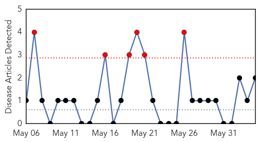
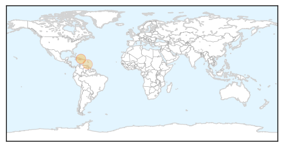
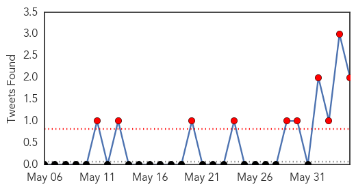
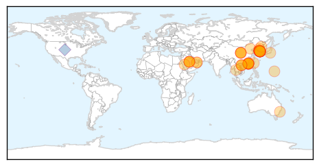
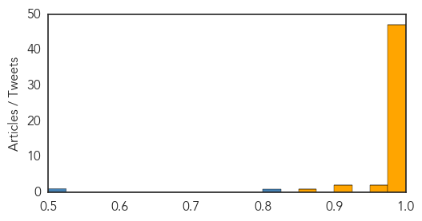

Chikungunya
30-Day Web Trend
6 alerts, 0 warnings

30-Day Twitter Trend
0 alerts, 0 warnings

Article Locations
Article Confidences

Top Articles:
Top Tweets:
-
No tweets found for Jun 04, 2015
MERS
30-Day Web Trend
14 alerts, 2 warnings

30-Day Twitter Trend
10 alerts, 0 warnings

Article Locations
Article Confidences
Top Articles:
- 1.000
- Jeju steps up MERS measures
- 1.000
- What you need to know about Middle East Respiratory Syndrome
- 1.000
- MERS: What you need to know about Middle East Respiratory Syndrome
- 1.000
- MERS outbreak in South Korea can probably be beat: WHO
- 1.000
- Health declaration required for passengers from RoK at Hanoi airport
- 0.999
- SGGP English Edition- Vietnam asks Korean passengers to fill medical declaration
- 0.999
- Middle East respiratory syndrome (MERS) Seminar
- 0.999
- MERS: What you need to know about Middle East Respiratory Syndrome
- 0.999
- South Korea reports fourth Middle East Respiratory Syndrome death as regional alarm grows
- 0.999
- South Korea reports fourth Middle East Respiratory Syndrome death as regional alarm grows
- 0.999
- S.Korea closes schools, quarantines 1,600 as 3rd patient dies — RT News
- 0.999
- South Korea closes hundreds of schools as MERS cases mount
- 0.999
- How Authorities Hope to Keep MERS From Spreading in the US
- 0.998
- Spread of MERS is low, thanks to disease controls
- 0.998
- Fever patients with travel history test negative for MERS-CoV
- 0.997
- MERS spread in South Korea fuels questions on virus change
- 0.997
- Deadly MERS virus spreading in South Korea
- 0.997
- South Korea Says Most MERS Patients Got Virus at Same Hospital
- 0.997
- MERS Spread in South Korea Fuels Questions on Virus Change
- 0.997
- Health Ministry discusses measures against MERS-CoV
- 0.996
- Singapore has measures in place in case Mers-CoV virus occurs here, says Ministry of Health, Others news, Health News, AsiaOne YourHealth
- 0.996
- MoH has taken proactive stance to prevent MERS outbreak
- 0.996
- Medical alert in South Korea due to the MERS virus outbreak
- 0.995
- China's first MERS patient remains in serious condition
- 0.995
- Is S. Korea dealing with mutated MERS? – The Korea Times
- 0.995
- GVB closely monitoring outbreak of MERS in South Korea
- 0.994
- 200 South Korean Schools Suspend Classes Owing to Outbreak of Coronavirus
- 0.994
- South Korea reports third MERS death as alarm grows
- 0.994
- South Korea reports third MERS death as alarm grows
- 0.994
- MERS causes travel cancellations to South Korea
- 0.994
- MERS: South Korea Fears of Virus Spreading Rapidly
- 0.993
- South Korea reports third MERS death as alarm grows
- 0.993
- South Korea reports third MERS death as alarm grows
- 0.992
- South Korea reports third MERS death as alarm grows
- 0.992
- South Korea reports third Mers death as alarm grows, East Asia News & Top Stories
- 0.992
- China prepares to tackle MERS
- 0.989
- South Korea reports third MERS death as alarm grows
- 0.989
- Borneo , Malaysia, Sarawak Daily NewsBorneoPost Online
- 0.989
- MERS: 5 things to know
- 0.988
- China prepares to tackle MERS - Xinhua
- 0.984
- South Korea reports third MERS death
- 0.981
- MERS virus in S. Korea: Officials trace the path of ‘index patient’
- 0.981
- Mers: Third person dies and 800 schools now closed as alarm grows in South Korea
- 0.979
- Tracing the path of South Korea's MERS 'patient zero'
- 0.978
- Tracing the path of South Korea's MERS 'patient zero'
- 0.977
- Tracing the path of South Korea's MERS 'patient zero'
- 0.976
- Tracing the path of South Korea's MERS 'patient zero'
- 0.975
- South Korea hit by third suspected MERS death
- 0.972
- Taiwan heightens MERS preparedness
- 0.914
- Pilgrims to Mecca must be vaccinated first: ministry
Showing top 50 articles...
Top Tweets:
- 0.805
- RT: S. Korea-Gov says 5 more coronavirus MERS cases&1 death of a prev known case - total cases/deaths = 41/4 -June 4 https:…
- 0.661
- RT: South Korea - Gov announced new coronavirus MERS case who died -total cases now 36, incl. 3 deaths https://t.co/9BbUr4Y…
- 0.627
- AFD Blog `@WHO MERS-CoV Update - Saudi Arabia ' http://t.co/7F8W7uNNOA
- 0.624
- Middle East respiratory syndrome coronavirus infection not found in camels in Japan http://t.co/Os7QdZe4TV MERS